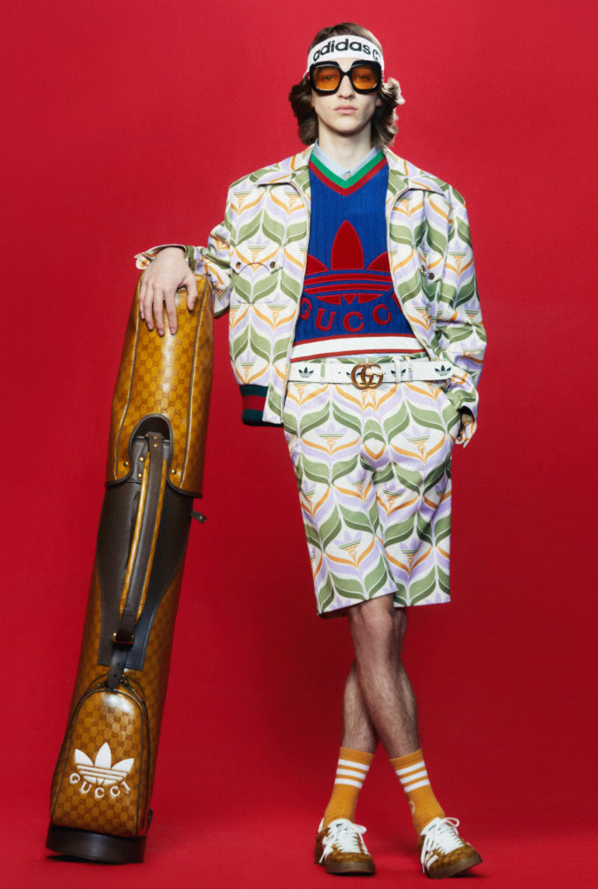
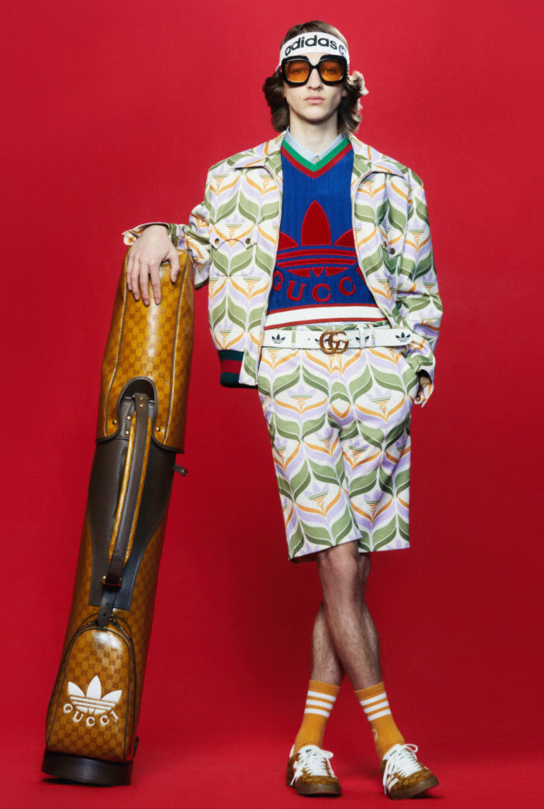

Collaborations & Partenariats
Les collaborations marquent la mode en mêlant les univers de grandes maisons pour créer des pièces uniques et inattendues. Gucci s'associe à Adidas et Balenciaga, tandis que Louis Vuitton et Yayoi Kusama unissent art et haute couture avec des créations visuelles fortes.
Gucci & Adidas
La collaboration entre Gucci et Adidas combine l’élégance du luxe italien avec l’énergie du sportswear. Ensemble, ils réinventent les codes des deux marques en mêlant motifs classiques, couleurs vives et influences rétro.
 

Cette collaboration est devenue iconique grâce à son style unique, inspiré des années 70 et 80, qui fusionne mode sportive et couture haut de gamme. Elle a marqué les tendances en montrant que le luxe peut être à la fois audacieux, confortable et moderne.
Gucci & Balenciaga
Gucci et Balenciaga unissent leurs univers en réinterprétant les codes de l’un à travers l’autre. Cette collaboration mélange logos, silhouettes et signatures des deux maisons dans une collection hybride et surprenante.
“The Hacker Project” est iconique car il brouille volontairement les limites entre les deux marques, créant des pièces inédites et audacieuses. Cette fusion du luxe a marqué l’industrie par son originalité et sa manière de jouer avec les identités visuelles.
Louis Vuitton & Yayoi Kusama (2023)
Louis Vuitton s’associe à l’artiste japonaise Yayoi Kusama pour une collection mêlant haute couture et art contemporain. Les pois colorés et les motifs hypnotiques de l’artiste recouvrent les pièces emblématiques de la maison.
Cette collaboration est iconique grâce à son identité visuelle forte, immédiatement reconnaissable. Elle combine l’univers artistique unique de Kusama avec l’élégance Louis Vuitton, donnant naissance à des pièces créatives devenues objets de collection.